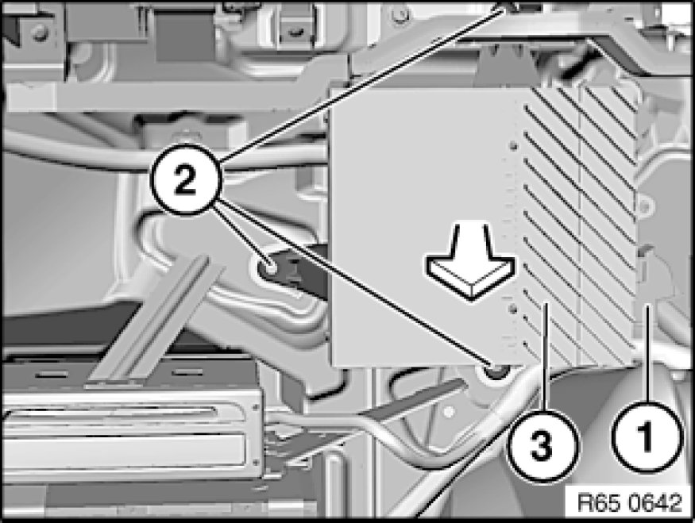
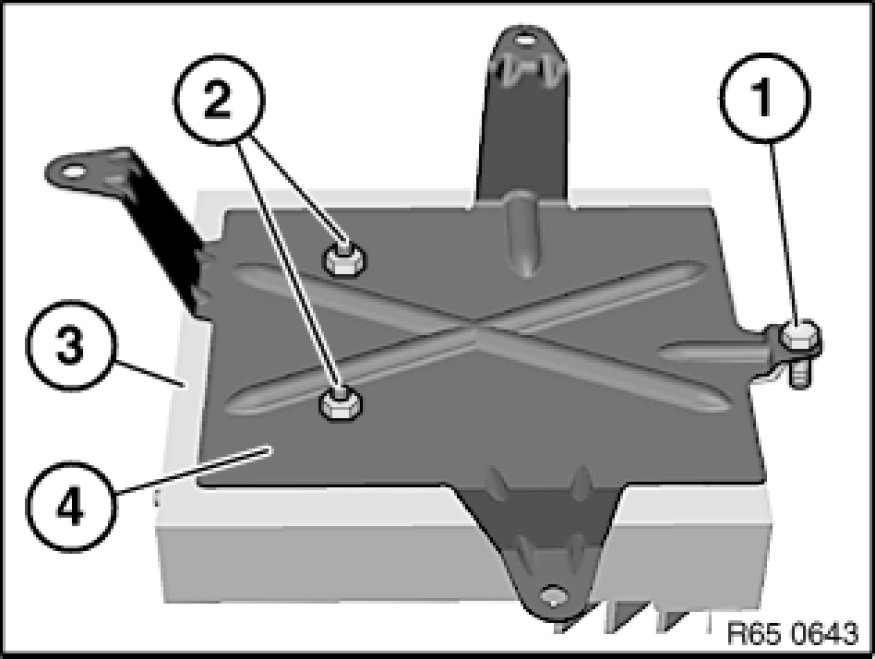

Removing and Installing/Replacing Amplifier
65 12 070 - Removing and installing/replacing amplifier

Necessary preliminary tasks:
- Remove luggage compartment wheel arch trim on left .

Unfasten plug connection (1) and disconnect.
Release screws (2).
Remove amplifier (3) with holder in direction of arrow.

Release screw (1).
Unscrew nuts (2).
Remove amplifier (3) from holder (4).